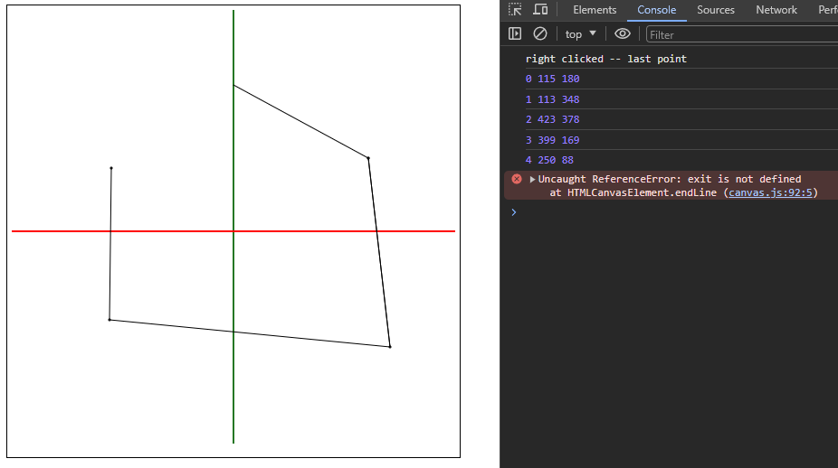

Name: Jack Bowen
Cruz ID: jmbowen@ucsc.edu (1839886)
Due Date: 1/22
Features:
- Uses PA0 To get the line input from the user. Also user input for num of sides and T/F endcaps
- Creates a surface of revolution around the Z axis
Challenges:
- Unsure if we should be using 2d or webgl
- Not sure how to use buffer objects, asked TA and he said hes teaching it next week
- Unfortunately ran out of time, Monday TA section was great to get an overview of how the program should work, Friday TA section internet was down.
- Wasn't able to get the SOR working, but was able to convert the points
Output Image
